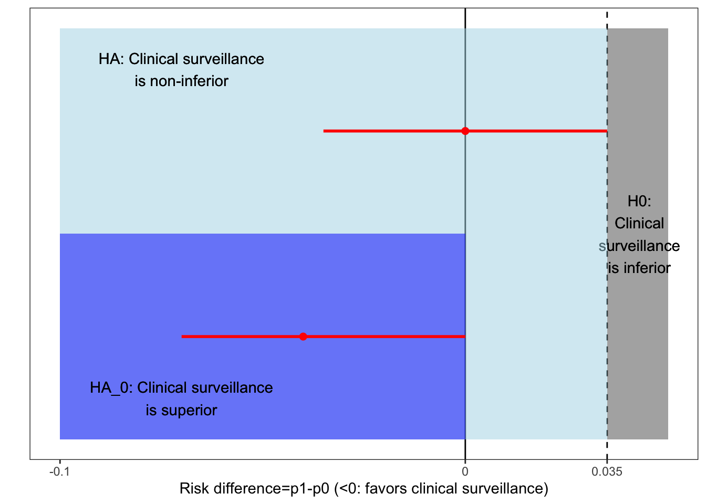
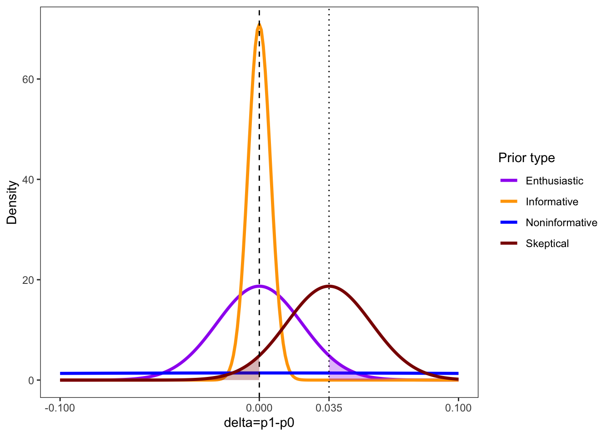
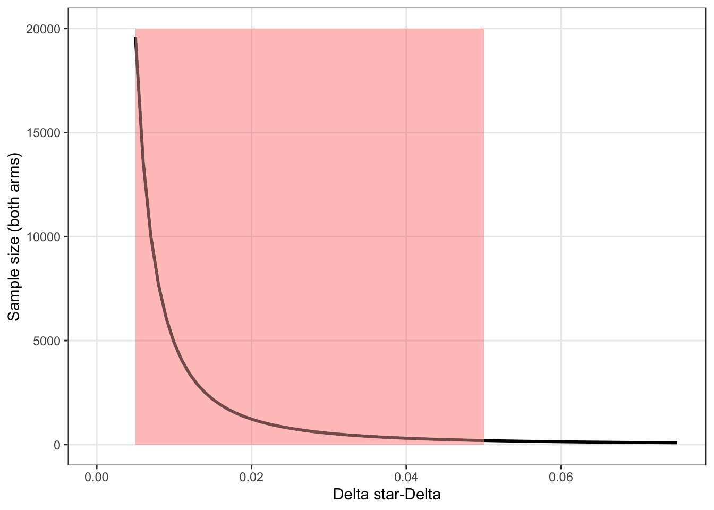
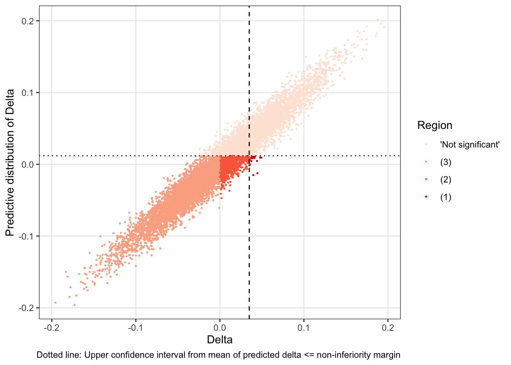
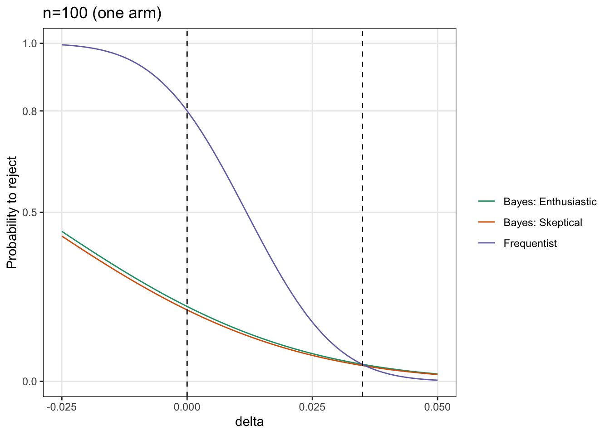
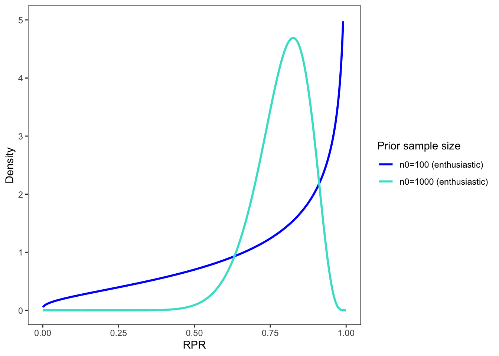
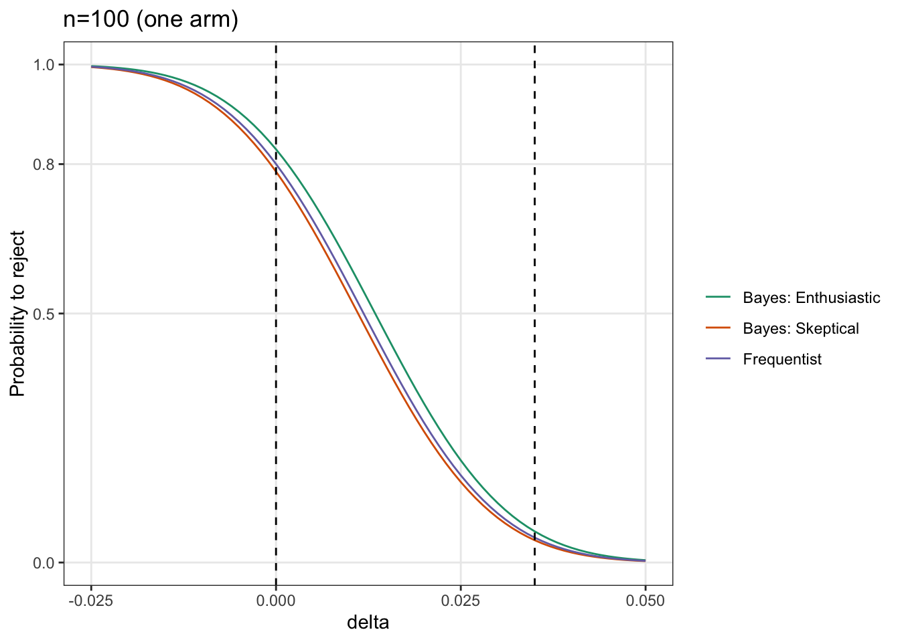

Chapter 2 Two-arm non-inferiority setting
We consider a non-inferiority clinical trial with \(H_0: \delta > \delta^*\) and \(H_a: \delta \leq \delta^*\), where \(\delta^*>0\) is a fixed non-inferiority margin and a treatment effect \(\delta\).
For example, \(H_0\) is ‘clinical surveillance is inferior to an active treatment’ versus \(H_a\) ‘clinical surveillance is non-inferior to an active treatment’. The primary outcome is a risk difference with an non-inferiority margin of 3.5%.

2.1 Binomial outcome
Here \(\delta=p_1-p_0\), where \(p_i\), \(i\in \{0,1\}\), are event probabilities for two groups.
2.1.1 Frequentist sample size
Let \(Y_{i,k} \sim^{iid} Bernoulli(p_i)\), \(k=1,\dots,n_i\), \(i\in \{0,1\}\). Then \(\overline p_i=\frac{1}{n_i}\sum_{k\leq n_i} Y_{i,k}\), \(i\in {0,1}\), is a consistent and sufficient statistic for \(p_i\), and thus \(D=\overline p_1-\overline p_0\) is Gaussian distributed with \(D \sim N\left(\delta, \frac{\sigma_1^2}{n_1}+\frac{\sigma_0^2}{n_0}\right)\), where \(\sigma_i^2=p_i(1-p_i)\), \(i\in \{0,1\}\).
We are interested whether the upper \((1-\alpha)\%\)-confidence limit is smaller than the non-inferiority margin, that is, \[ D+z_{1-\alpha}\sqrt{\frac{n_0\sigma_1^2+n_1\sigma_0^2}{n_1n_0}}\leq \delta^*, \] where \(z_{1-\alpha}=\Phi^{-1}(1-\alpha)\) with \(\Phi^{-1}\), the quantile function of the standard Gaussian distribution function.
Because \[ D\leq -z_{1-\alpha}\sqrt{\frac{n_0\sigma_1^2+n_1\sigma_0^2}{n_1n_0}}+\delta^* \] we have that, for \(\Phi\) being the probability distribution function of the standard Gaussian distribution, \[ P(S^{F}|\delta)=P_{\delta}(Z\leq - z_{1-\alpha})= \Phi\left(-z_{1-\alpha}-\sqrt{\frac{n_1n_0}{n_0\sigma_1^2+n_1\sigma_0^2}}(\delta-\delta^*)\right), \] since \[ Z=\sqrt{\frac{n_1n_0}{n_0\sigma_1^2+n_1\sigma_0^2}}(D-\delta) \rightarrow^{n \rightarrow \infty} N(0,1). \] For an alternative point difference \(\delta_A\) we have that \(P_{\delta_A}(Z\leq - z_{1-\alpha})=1-\beta\), which is known as the frequentist power (or the probability of rejection given \(\delta_A\)). From that we have that
\[ -z_{1-\alpha}-\sqrt{\frac{n_1n_0}{n_0\sigma_1^2+n_1\sigma_0^2}}(\delta-\delta^*)=\Phi^{-1}(1-\beta)=z_{1-\beta} \] and so the frequentist sample size can then be derived as \[ \frac{(z_{1-\beta}+z_{1-\alpha})^2}{(\delta-\delta^*)^2}=\frac{an_0^2}{n_0\sigma_1^2+an_0\sigma_0^2}, \] where \(a=n_1/n_0\) is an allocation ratio, such that \[ n_0=(z_{1-\beta}+z_{1-\alpha})^2\frac{\sigma_1^2+a\sigma_0^2}{a(\delta-\delta^*)^2}, \quad n_1=an_0. \]
2.1.2 Frequentist sample size: Calculation in R
The following \(R\) function can be used to calculate the required sample size.
- \(p_1=0.01\), \(p_0=0.01\), \(\delta^*=0.035\), \(1-\beta=0.8\), \(\alpha=0.05\), \(a=1/1\)
library(epiR)
alpha <- 0.05
beta <- 0.2
p_0 <- 0.01
p_1 <- 0.01
delta <- p_1-p_0
delta_star <- 0.035
sd_0 <- sqrt(p_0*(1-p_0))
sd_1 <- sqrt(p_1*(1-p_1))
a <- 1/1
epi.ssninfb(treat=p_1, control=p_0, delta=delta_star, power=1-beta, r=a, alpha=alpha, n=NA)## $n.total
## [1] 200
##
## $n.treat
## [1] 100
##
## $n.control
## [1] 100
##
## $delta
## [1] 0.035
##
## $power
## [1] 0.8n_0 <- ((qnorm(1-beta)+qnorm(1-alpha))^2)*((sd_1^2+a*sd_0^2)/(a*(delta-delta_star)^2))
n_0## [1] 99.93031n_1 <- n_0*a
n_1## [1] 99.93031\(\delta_A\) and \(\delta^*\) in a frequentist setting are assumed as fixed constants. Their choices are of high importance, because all trial conclusions are based on those choices and affect the sample size calculation. The plot below shows how the sample size increase as \(\delta^* \rightarrow \delta\).
## Scale for x is already present.
## Adding another scale for x, which will replace the existing scale.
2.1.3 Hybrid approach
A hybrid approach assumes that the true treatment effect \(\delta\) is a realization from a random variable \(\Delta\) with prior probability density function \(p(\delta)\). The prior is defined before data collection (‘design prior’). If we assume that \(\pi_i:=p_i(\delta)=Beta(a_i,b_i)\), then the posterior distribution is \(Beta(a_i+\sum_{k\leq n_i}Y_{i,k},b_i+n_i-\sum_{k\leq n_i}Y_{i,k})\). The variance is given as
\[ \frac{\left(a_i+\sum_{k\leq n_i}Y_{i,k}\right)\left(b_i+n_i-\sum_{k\leq n_i}Y_{i,k}\right)}{(a_i+b_i+n_i)^2(a_i+b_i+n_i+1)} \]

with Gaussian prior \(\Delta \sim N\left(d, \frac{\sigma_1^2}{n_1}+\frac{\sigma_0^2}{n_0}\right)\), where \(\sigma_i^2=p_i(1-p_i)\), \(i\in \{0,1\}\). The prior can be thought as a
In the following we choose the following prior:
- Enthusiastic prior (favors non-inferiority): \(d=0\), \(n_0=6.6\), \(P(\Delta>\delta^*)=0.05\). This prior is centered on the treatment effect such that there is a low probability (here 5%) of inferiority.
- Skeptical prior (favors inferiority): \(d=\delta^*\), \(n_0=6.6\), \(P(\Delta>0)=0.05\). This prior is centered on the non-inferiority margin such that there is a low probability (here 5%) of superiority.
- Informative prior (clinical expert knowledge): \(d=0\) with \(n_0=25\).
- Noninformative prior (please do not use in practice!): \(d=0\) with \(n_0=0.5\).
2.3 Hybrid approach
- ‘Power’: \(P(S_{1-\alpha}|\delta, \delta^*)=\Phi\left(-z_{1-\alpha}-\sqrt{\frac{n}{\tilde\sigma^2}}(\delta-\delta^*)\right)\)
- ‘Average power’ (Grieve), assurance (O’Hagan), probability of success (!) (Kunzmann et al., Spiegelhalter): \(AP=\int_{\Delta} P(S^{F}|\delta, \delta^*)p(\delta)d\delta\), where \(\Delta \sim p(\delta)\)
- \(AP=\Phi\left(\sqrt{\frac{n_0}{n_0+n}}\left[-z_{1-\alpha}-\sqrt{\frac{n}{\tilde\sigma^2}}(d-\delta^*)\right]\right)\)
- Upper bound of AP: \(AP \rightarrow \Phi\left(-(d-\delta^*)\sqrt{\frac{n_0}{\tilde\sigma^2}}\right)\), as \({n \rightarrow \infty}\)
- As \(n_0 \rightarrow \infty\): \(AP \rightarrow P(S_{1-\alpha}|d)\) (aka classical power at \(d\))
2.4 Hybrid approach
Results:
## type n_0 n AP upper_AP
## 1 Enthusiastic 6.6 100 0.58 0.74
## 2 Informative 25.0 100 0.65 0.89
## 3 Noninformative 0.5 100 0.52 0.57
## 4 Skeptical 6.6 100 0.34 0.50Question: Is 58% (AP) low compared to 80% (classical ‘power’)?
Results easily can include inclusion of uncertainty about \(\delta^*\), say, \(\delta^*\sim Un(0.005, 0.05)\).
2.5 Implications
Rufibach et al. (2016) give a closed a formula for the distribution of \(RPR:=P_{\Delta}(Z\leq - z_{1-\alpha})\), where \(\Delta \sim N(d,\tilde\sigma^2/n_0)\), and discuss the shape under different prior choices (RPR=’Random probability to reject`, see Kunzmann et al.)
- u-shaped if \(n_0<n\) (‘prior sample’ size is smaller than planned sample size)
## Warning: Removed 128 rows containing missing values (`geom_line()`).
2.6 Implications
- unimodal if \(n=n_0\)
- ‘hill’-shape if \(n_0>n\) (rather unrealistic interpretation)
## Warning: Removed 9 rows containing missing values (`geom_line()`).
2.8 Decomposition of AP
- AP integrates over whole \(\delta\) range, including ‘non-favorable’ \[ AP=\overbrace{P(Z\leq - z_{1-\alpha}, \Delta>\delta^*)}^{(1)}+\overbrace{P(Z\leq - z_{1-\alpha}, 0<\Delta\leq\delta^*)}^{(2)} \\ +\overbrace{P(Z\leq - z_{1-\alpha}, \Delta\leq0)}^{(3)} \]
- AP=(1) Probability of Type-I error + (2) ‘Non-inferior, but treatment effect not relevant’ + (3) ‘Non-inferior, treatment effect relevant’
- \(AP \approx P(Z\leq - z_{1-\alpha}, \Delta\leq0)\) (see Spiegelhalter), pharma (favors AP, shortterm) vs regulators (favors the other, longterm), see discussion in Kunzmann et al.
2.9 Decomposition of AP
Under enthusiastic prior:

## region prop
## 1 'Not significant' 0.41627
## 2 (3) 0.49073
## 3 (2) 0.09161
## 4 (1) 0.001392.10 Expected power
\[ AP=\overbrace{P(Z\leq - z_{1-\alpha}, \Delta>\delta^*)}^{(1)}+\overbrace{P(Z\leq - z_{1-\alpha}, 0<\Delta\leq\delta^*)}^{(2)} \\ +\overbrace{P(Z\leq - z_{1-\alpha}, \Delta\leq0)}^{(3)} \] For our noninferiority setting consider (2)+(3).
\[ P(Z\leq - z_{1-\alpha}, \Delta\leq\delta^*)=P(Z\leq - z_{1-\alpha}|\Delta\leq\delta^*)P(\Delta\leq\delta^*)\\=\underbrace{E\left[P_{\Delta\leq\delta^*}(Z\leq - z_{1-\alpha})\right]}_{EP}P(\Delta\leq\delta^*), \] where \(EP\) is ‘expected power’ (Kunzmann et al.).
2.11 To make things more powerful confusing
Spiegelhalter calls \(P(Z\leq - z_{1-\alpha}, \Delta\leq\delta^*)\) the ‘prior adjusted power’ (PAP):
\[ \underbrace{P(Z\leq - z_{1-\alpha}, \Delta\leq\delta^*)}_{PAP}=\underbrace{E\left[P_{\Delta\leq\delta^*}(Z\leq - z_{1-\alpha})\right]}_{EP}\underbrace{P(\Delta\leq\delta^*)}_{constant} \]
2.12 EP, PAP, AP
Noninferiority setting \(\Delta\leq\delta^*\):
## ep pap ap const type
## 1 0.6797 0.3398 0.3418 0.5000 Skeptical
## 2 0.7861 0.5806 0.5828 0.7386 Enthusiastic
## 3 0.7226 0.6454 0.6470 0.8932 Informative
## 4 0.9186 0.5234 0.5233 0.5698 Noninformative2.13 Conditional Bayesian power
Uses posterior distribution to define ‘Bayesian significance’: \(S^B:=P(\Delta\leq\delta^*|data)=1-\epsilon\), (not \(\alpha\)) - Remember \(D=\overline{Y}_{1}-\overline{Y}_{0}\) with \(D \sim N(\delta, \frac{\tilde\sigma^2}{n})\), where \(\tilde\sigma^2=\sigma_1^2+\sigma_1^2\) Suppose that \(\Delta \sim N(d, \tilde\sigma^2/n_0)\) then the posterior distribution given \(D\) is distributed as \(\Delta|D \sim N\left(\frac{n_0d+nD}{n_0+n}, \frac{\tilde\sigma^2}{n_0+n}\right)\). We are interested in
$$
$$
- \(P(S^B|\delta)=\Phi\left(-\sqrt{\frac{n_0+n}{n}}z_{1-\epsilon}-\frac{\sqrt{n}}{\tilde\sigma}\left[\delta-\frac{n_0+n}{n}\delta^*+\frac{n_0}{n}d\right]\right)\)
- \(P(S^{F}|\delta)=\Phi\left(-z_{1-\alpha}-\frac{\sqrt{n}}{\tilde\sigma}(\delta-\delta^*)\right)\)
2.14 Conditional Bayesian power

## delta y type
## 1 0.000 0.83 Bayes: Enthusiastic
## 2 0.035 0.06 Bayes: Enthusiastic
## 3 0.000 0.78 Bayes: Skeptical
## 4 0.035 0.04 Bayes: Skeptical
## 5 0.000 0.80 Frequentist
## 6 0.035 0.05 Frequentist2.15 Average Bayesian power
- \(P(S^B)=\Phi\left(-\sqrt{\frac{n_0}{n}}z_{1-\epsilon}-\frac{\sqrt{n_0}\sqrt{n_0+n}(d-\delta^*)}{\sqrt{n}\tilde\sigma }\right)\)
## type AP AP_bayes
## 1 Enthusiastic 0.583 0.594
## 2 Skeptical 0.341 0.336
## 3 Informative 0.647 0.715
## 4 Noninformative 0.524 0.524Of course, Bayesian average power can again be decomposed into EP and PAP.
2.16 Power vocabulary summary (💪)
- ‘Power’: Classical power which is conditional on a fixed alternative point estimate. Probability to reject.
- Bayesian power: Using posterior distribution.
- Conditional power: Frequentist power in interim analysis (not discussed here).
- Average power: Marginal probability of rejection, classical power ‘averaged’ over (design) prior. Assurance. Bayesian predictive power.
- Expected power: Weighted average of the probability to reject in a ‘relevant’ region. Also called conditional expected power (😕).
- Probability of success (PoS): Very often authors use PoS for ‘average power’. Depends on success definition.